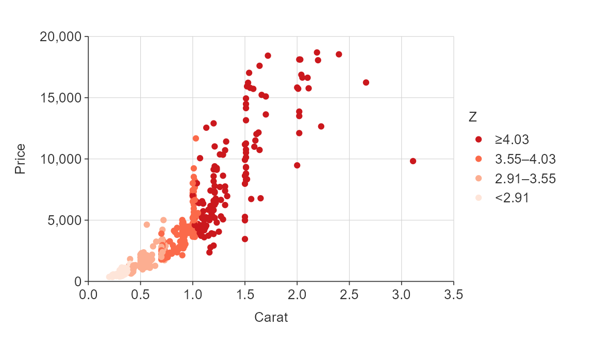
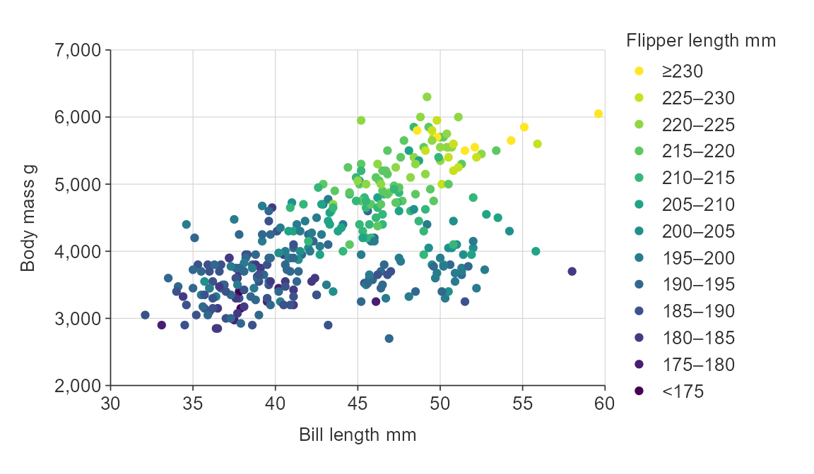
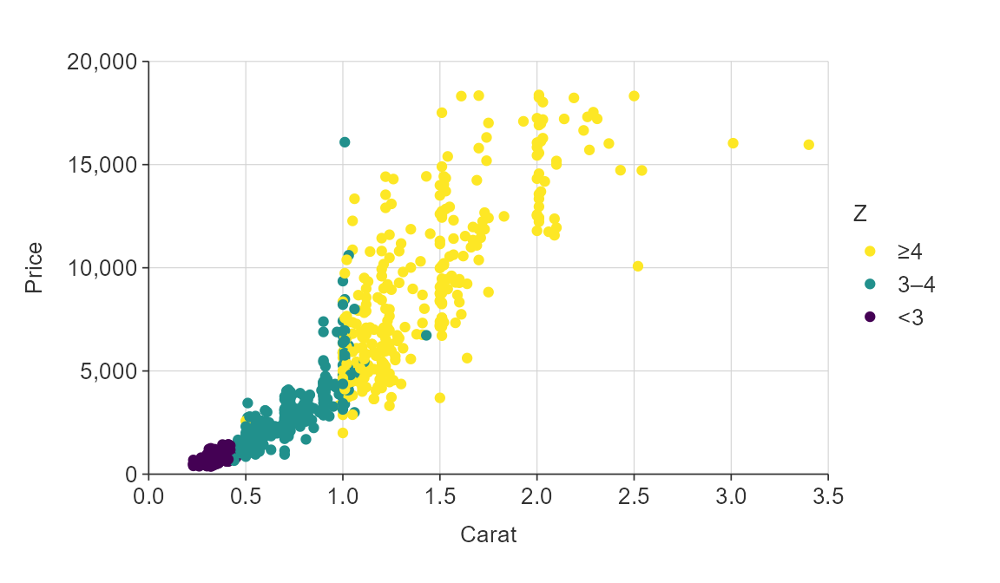
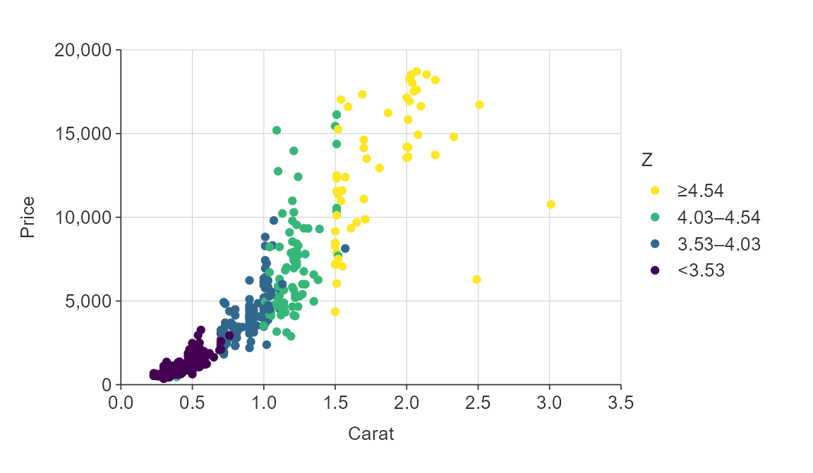

Overview
In {simplevis}, users adhere to the following rules for adjusting colour:
- You can customise colours via the
palargument - If colouring by a variable, use a
*_col()or*_col_facet()function, and define thecol_var - If the
col_varis numeric, there arecontinuous,binorquantilecolouring methods available - For
binandquantile, you can modify the colour breaks using thecol_breaks_norcol_cutsarguments.
In {simplevis}, there is one colour concept, which generally includes all aspects of features that is relevant to the visualisation family type. This is a consistent method across all functions, which is intended to simplify colouring.
Customise colours via the pal argument
Default palettes can be changed by providing a character vector of
hex codes to the pal argument.
gg_point(penguins,
x_var = bill_length_mm,
y_var = body_mass_g,
pal = "#da3490")
gg_point_col(penguins,
x_var = bill_length_mm,
y_var = body_mass_g,
col_var = species,
pal = c("#da3490", "#9089fa", "#47e26f"))
Users can get access to a large amount of colour palettes through the pals package.
gg_point_col(penguins,
x_var = bill_length_mm,
y_var = body_mass_g,
col_var = species,
pal = pals::brewer.dark2(3))
If colouring by a variable, use a *_col() or
*_col_facet() function, and define the
col_var
To colour by a variable, use a *_col() function and then
define that variable to be coloured using the col_var
argument.
gg_point_col(penguins,
x_var = bill_length_mm,
y_var = body_mass_g,
col_var = species)
gg_point_col_facet(penguins,
x_var = bill_length_mm,
y_var = body_mass_g,
col_var = sex,
facet_var = species,
col_na_rm = TRUE)
If colouring by a numeric variable, continuous, bin and quantile methods are available
All {simplevis} *_col() and *_col_facet()
functions support colouring by a categorical variable.
In addition, point, bar, hbar,
tile, sf and stars
*_col() and *_col_facet() functions support
colouring by a numeric variable.
You do this by specifying whether you want to do this by defining
whether the col_method is to be by continuous (the
default), bin or quantile.
plot_data <- ggplot2::diamonds %>%
slice_sample(prop = 0.01)
gg_point_col(plot_data,
x_var = carat,
y_var = price,
col_var = z)
plot_data <- ggplot2::diamonds %>%
slice_sample(prop = 0.01)
gg_point_col(plot_data,
x_var = carat,
y_var = price,
col_var = z,
col_method = "bin")
plot_data <- ggplot2::diamonds %>%
slice_sample(prop = 0.01)
gg_point_col(plot_data,
x_var = carat,
y_var = price,
col_var = z,
col_method = "quantile",
pal = pals::brewer.reds(4))
For bin and quantile, modify colour breaks
using the col_breaks_n or col_cuts
arguments
For bin, the col_breaks_n argument uses the
pretty algorithm to aim for roughly the specified number of pretty
breaks. For quantile, it selects that number of bins of
equal percentiles.
Alternatively, you can specify the exact breaks you would like by
specifying a vector to the col_cuts argument. For
bin, this is a vector of values that should start at either
-Inf or 0 and finish at Inf. For quantile, this is a vector
of probabilities between 0 and 1.
gg_point_col(penguins,
x_var = bill_length_mm,
y_var = body_mass_g,
col_var = flipper_length_mm,
col_method = "bin",
col_breaks_n = 10)
plot_data <- ggplot2::diamonds %>%
slice_sample(prop = 0.02)
gg_point_col(plot_data,
x_var = carat,
y_var = price,
col_var = z,
col_method = "bin",
col_cuts = c(0, 3, 4, Inf))
gg_point_col(penguins,
x_var = bill_length_mm,
y_var = body_mass_g,
col_var = flipper_length_mm,
col_method = "quantile",
col_breaks_n = 8)
plot_data <- ggplot2::diamonds %>%
slice_sample(prop = 0.01)
gg_point_col(plot_data,
x_var = carat,
y_var = price,
col_var = z,
col_method = "quantile",
col_cuts = c(0, 0.5, 0.75, 0.9, 1))